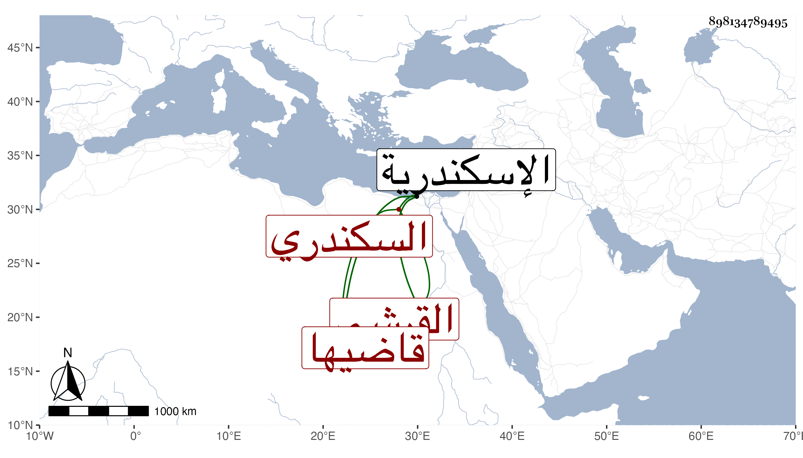

0902Sakhawi.DawLamic.ITO20230111-ara1.EIS1600.898134789495
Biography ID: 898134789495
12
أبو البركات بن مالك القرشي السكندري قاضيها واسمه محمد ويعرف بابن مالك أيضا مالكي المذهب . ولي قضاء اسكندرية في سنة ست وسبعين وثمانمائة عوضا عن العفيف مع نقص بضاعته ولكنه استناب النوبي والمتيجي وكان عارفا بطريق القضاء والوثائق سيوسا ممن حج وجاور سنين قال إنها أربعة وجلس بباب السلام مع الشهود وكان يفتح عليه في ذلك ولم يكن في نيته الدخول في القضاء . مات في رمضان سنة إحدى وثمانين باسكندرية عفا الله عنه
